Assinatura
Torta de Morango e Ninho
Nido milk, morangos frescos e casquinha de chocolate branco. O clássico da casa, feito com amor.
Encomendar →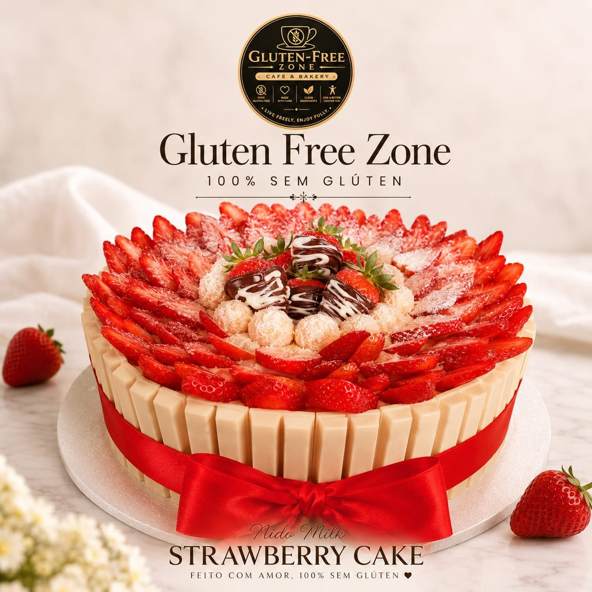
Cafés especiais, bolos, pães e sobremesas preparados artesanalmente, com ingredientes selecionados, para quem não abre mão de qualidade — nem de prazer.
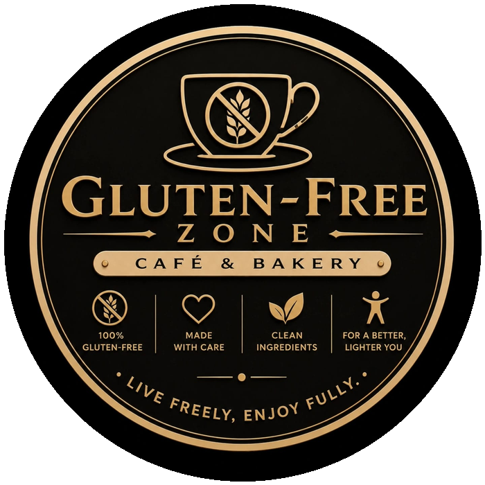
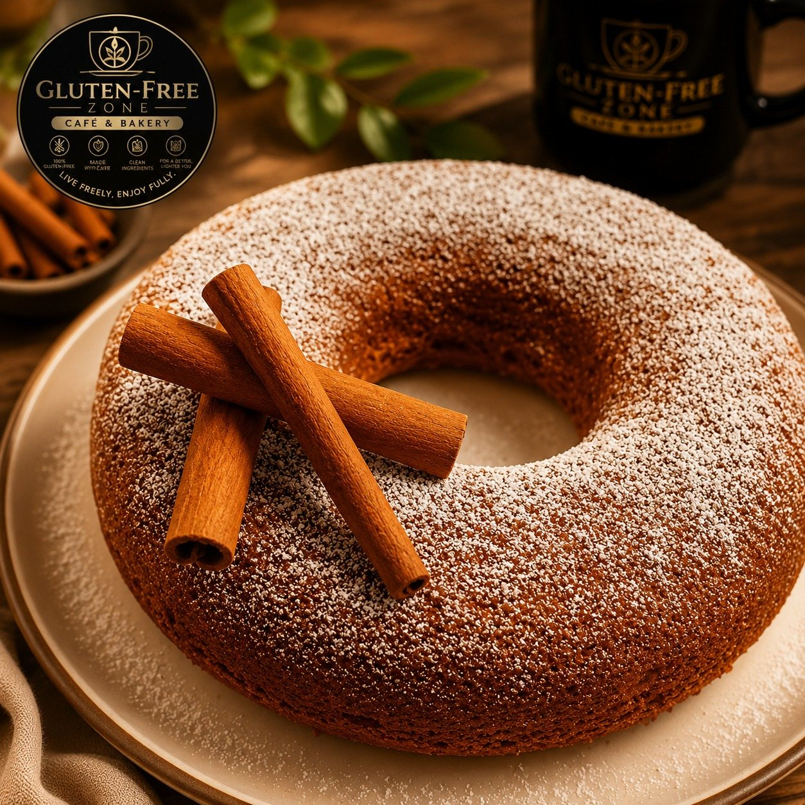
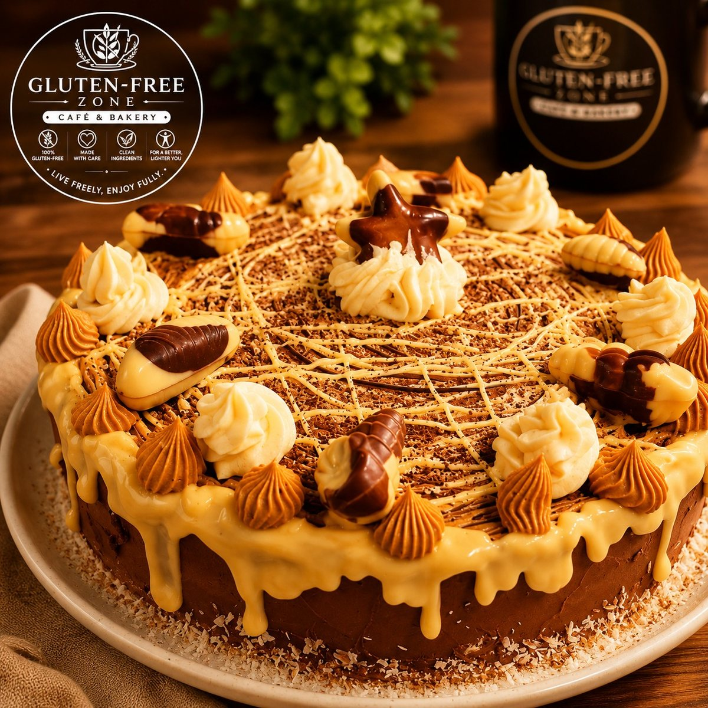
A Gluten-Free Zone nasceu de uma convicção simples: comida sem glúten pode — e deve — ser extraordinária. Cada receita é desenvolvida do zero, artesanalmente, sem atalhos e sem contaminação.
Selecionamos ingredientes limpos e naturais, testamos cada fornada e preparamos cafés especiais que fazem justiça ao que sai do nosso forno. É gastronomia de verdade, pensada para quem valoriza sabor, qualidade e bem-estar em partes iguais.
Feito com amor, 100% sem glúten.
Cozinha livre de contaminação cruzada, do primeiro ingrediente ao acabamento final.
Produção artesanal em pequenos lotes, com o cuidado de quem cozinha para a própria família.
Seleção rigorosa de matérias-primas naturais, sem excessos e sem o que você não precisa.
Para quem quer comer bem e viver melhor — sem culpa, sem restrição de sabor.
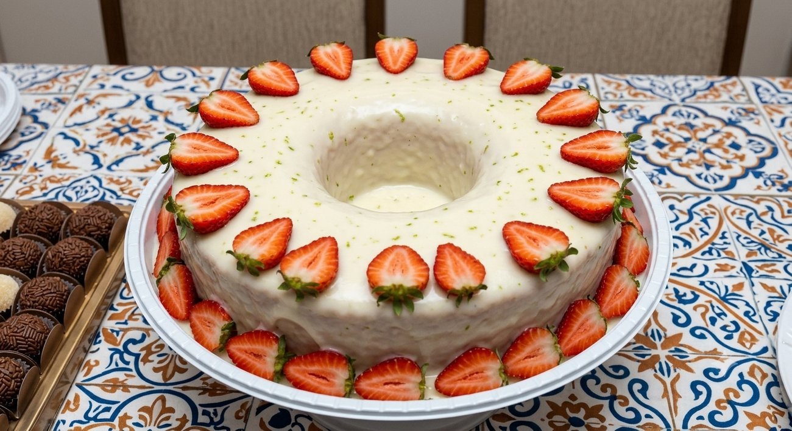
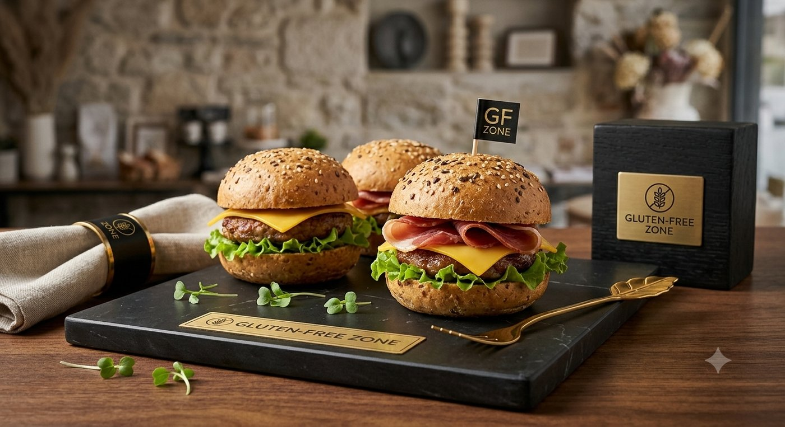
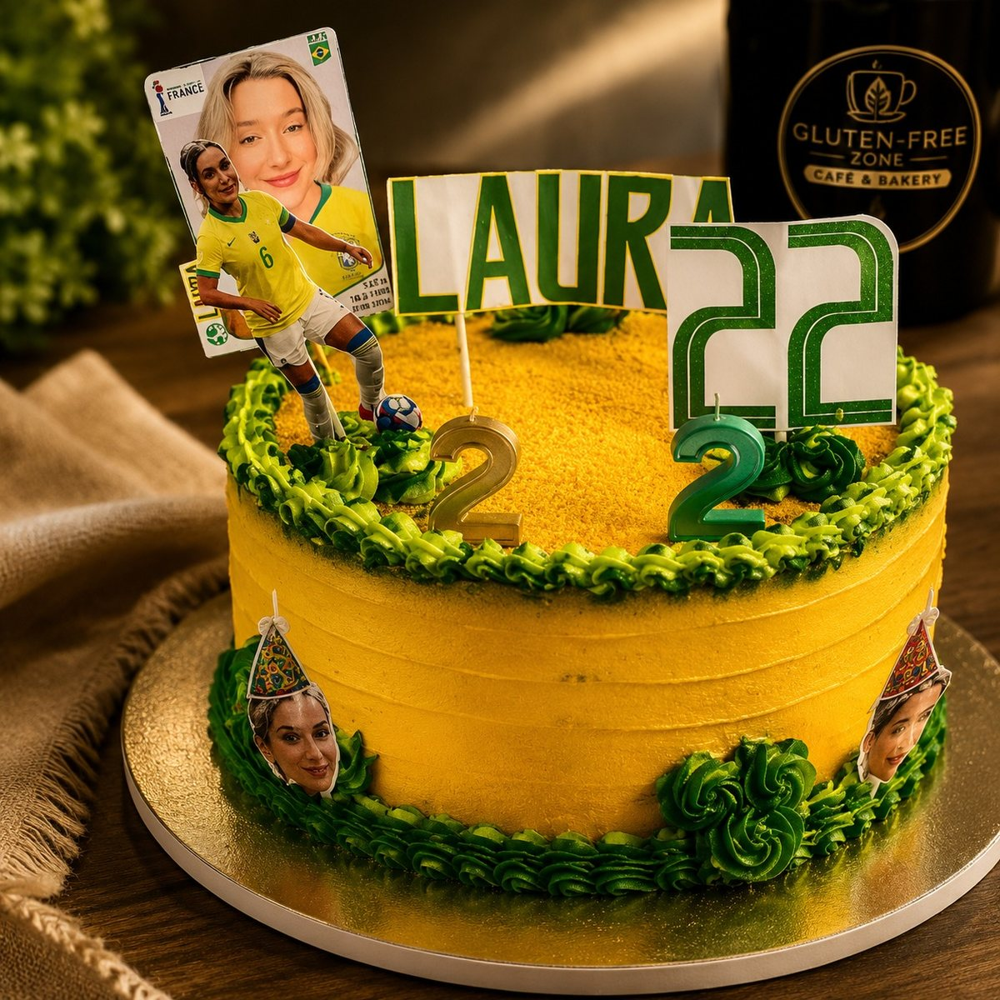
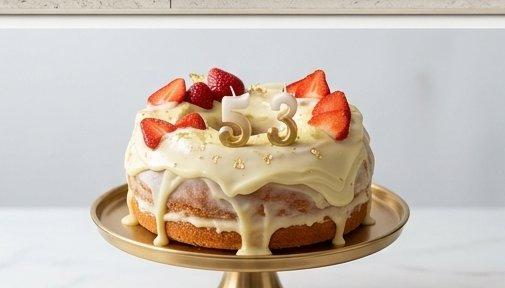
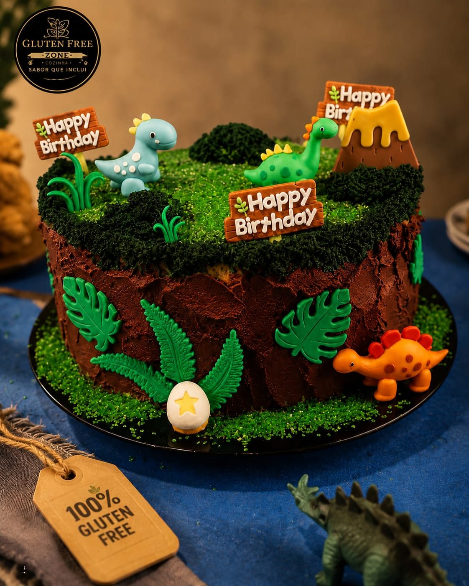
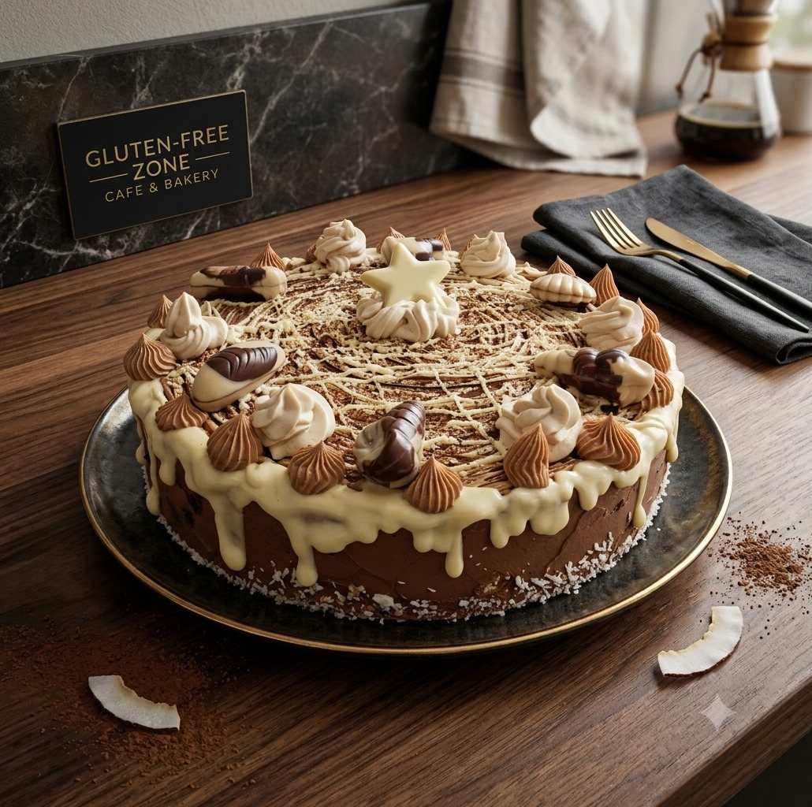
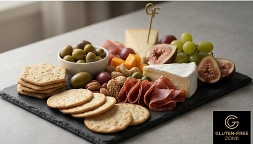
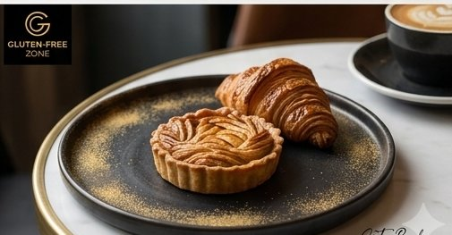
Aniversários, reuniões, chás de bebê ou apenas uma tarde especial com amigos — montamos mesas completas 100% sem glúten, do salgado à sobremesa, para todo mundo comer sem restrição.
Mini sanduíches, tábuas de frios, quiches, salgados assados e doces variados — tudo pensado para servir em grupo, com a mesma qualidade artesanal de sempre.
Solicitar orçamento de evento →Cada receita preparada à mão, em pequenos lotes.
Seleção limpa, sem aditivos desnecessários.
Cozinha 100% dedicada ao sem glúten.
Padrão premium do forno à sua mesa.
Depois de anos sem comer bolo por causa da celíaca, encontrei uma marca que faz sobremesa de verdade. Chorei na primeira mordida.
Encomendei o Strawberry Cake para o aniversário da minha filha. Ninguém percebeu que era sem glúten — só que era o melhor da festa.
Os pães são leves de um jeito que eu não achava possível sem glúten. Já virou pedido fixo lá em casa toda semana.
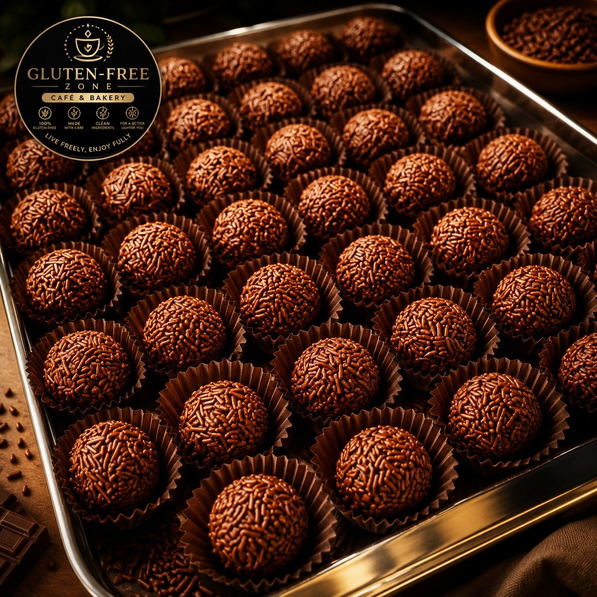
Encomende bolos, docinhos, pães e salgados — feitos na hora, com amor, 100% sem glúten.